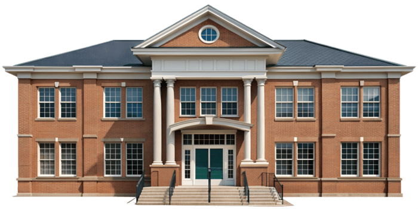

RINCOLL INTERNATIONAL SCHOOLAt RINCOLL International School, our academic programmes are designed to inspire curiosity, encourage critical thinking, and prepare students for lifelong success.
Our Early Years programme provides a nurturing and stimulating environment where young learners develop social, emotional, and foundational academic skills through guided play.
The Primary School curriculum focuses on literacy, numeracy, creativity, and character development, helping pupils build confidence and a love for learning.
Our Secondary School programme prepares students for higher education through rigorous academics, leadership development, and exposure to real-world learning experiences.